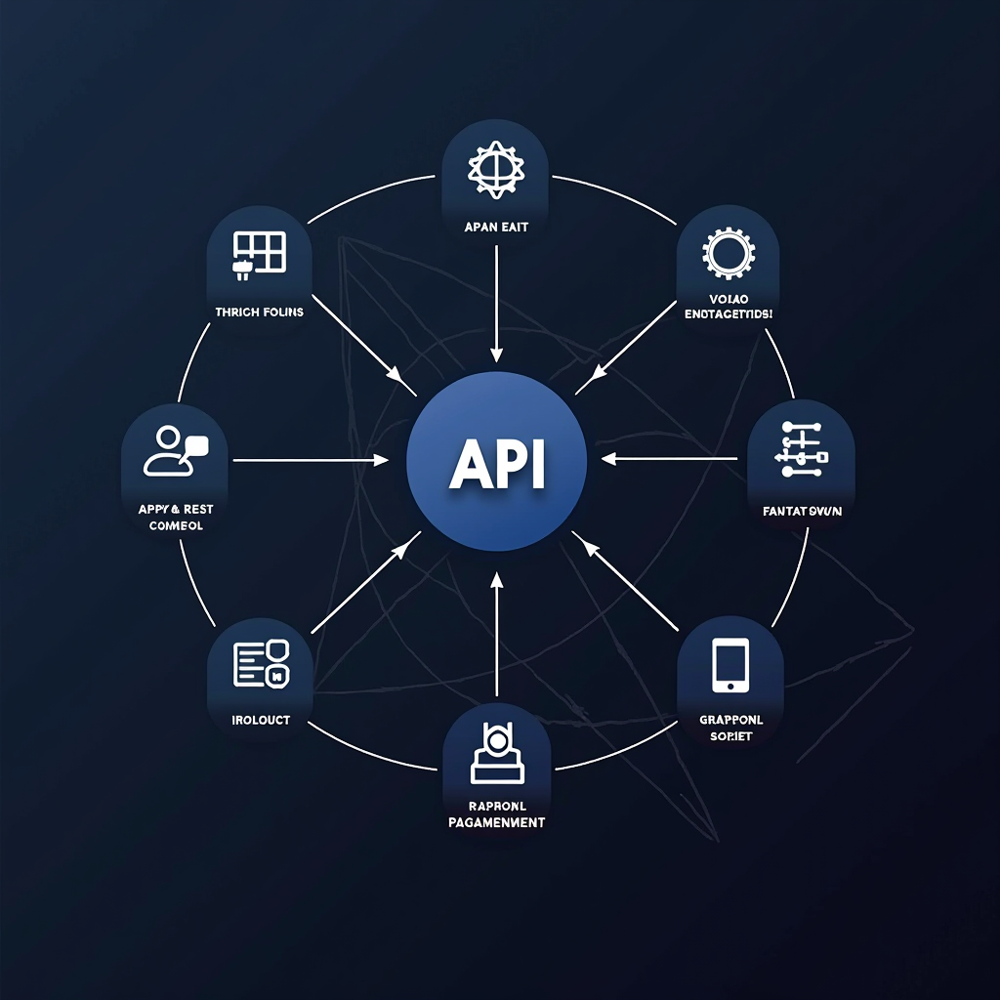

The Evolution of API Design: From REST to GraphQL and Beyond

The landscape of API design has undergone a remarkable transformation over the past decade, fundamentally changing how we build and interact with modern digital systems. What began as simple REST endpoints has evolved into sophisticated GraphQL implementations and event-driven architectures that power today's most responsive interface designs. This evolution reflects our growing understanding of system flow optimization and the need for lightweight performance in increasingly complex digital environments.
Understanding these patterns is crucial for developers and architects working to create seamless interaction experiences. Each approach offers distinct advantages and trade-offs that can significantly impact your system's behavior, scalability, and maintainability. Let's explore this journey and examine when to apply each pattern in your architecture.
The REST Foundation: Understanding Traditional API Design
REST (Representational State Transfer) emerged as the dominant API design pattern in the early 2000s, providing a standardized approach to building web services. Its resource-oriented architecture aligned perfectly with HTTP methods, creating an intuitive mapping between operations and endpoints. The simplicity of REST made it accessible to developers while providing enough structure to build robust, scalable systems.
The core principles of REST—statelessness, client-server separation, cacheability, and uniform interface—established best practices that continue to influence modern API design. These principles enabled the creation of adaptive digital environments where services could scale independently and clients could interact with resources through predictable patterns. The stateless nature of REST particularly contributed to lightweight performance, as servers didn't need to maintain session information between requests.
However, as applications grew more complex, REST's limitations became apparent. Over-fetching and under-fetching of data emerged as common problems. A client requesting user information might receive far more data than needed, or conversely, might need to make multiple requests to gather all required information. This inefficiency impacted both network performance and the overall digital system flow, particularly in mobile environments where bandwidth and battery life are critical concerns.
The versioning challenge also complicated REST implementations. As APIs evolved, maintaining backward compatibility while introducing new features often led to proliferating endpoints or complex versioning schemes. These issues didn't invalidate REST's value but highlighted the need for alternative approaches in certain scenarios, particularly for applications requiring fine-grained control over data retrieval and real-time updates.
GraphQL: Revolutionizing Data Fetching Patterns
GraphQL emerged from Facebook in 2015 as a response to the limitations of REST, particularly for mobile applications requiring efficient data loading. Its query language approach fundamentally changed how clients interact with APIs, shifting control from the server to the client. Instead of multiple endpoints returning fixed data structures, GraphQL provides a single endpoint where clients specify exactly what data they need through declarative queries.
This paradigm shift addressed the over-fetching and under-fetching problems inherent in REST. A GraphQL query can request multiple related resources in a single request, retrieving only the specific fields needed. This precision creates a more responsive interface design by minimizing data transfer and reducing the number of round trips between client and server. The result is a smoother system behavior that feels more immediate and fluid to end users.
The strongly-typed schema at GraphQL's core provides powerful development benefits. The schema serves as a contract between client and server, enabling sophisticated tooling for validation, auto-completion, and documentation generation. This type safety catches errors at development time rather than runtime, contributing to more reliable digital system flow. The introspection capabilities allow clients to discover available operations dynamically, making APIs more self-documenting and easier to explore.
GraphQL's subscription mechanism introduced native support for real-time data, enabling push-based updates without polling. This feature proved particularly valuable for collaborative applications, live dashboards, and any scenario requiring immediate data synchronization. The ability to maintain persistent connections and receive updates as they occur creates truly adaptive digital environments that respond instantly to changes.
Despite these advantages, GraphQL introduces complexity in implementation and operation. Query complexity analysis becomes necessary to prevent resource exhaustion from deeply nested or expensive queries. Caching strategies require more sophistication than simple HTTP caching, as the dynamic nature of queries makes traditional caching approaches less effective. These trade-offs mean GraphQL isn't universally superior to REST—it excels in specific scenarios while adding overhead that may not be justified for simpler use cases.
Event-Driven Architectures: Embracing Asynchronous Communication
Event-driven architectures represent a fundamental shift from request-response patterns to asynchronous, message-based communication. Rather than direct API calls, components communicate by publishing and subscribing to events, creating loosely coupled systems that can scale and evolve independently. This approach aligns naturally with modern distributed systems and microservices architectures, where services need to react to changes without tight coupling.
The publish-subscribe pattern at the heart of event-driven design enables remarkable flexibility in system composition. New services can subscribe to existing events without modifying publishers, allowing systems to grow organically. This loose coupling contributes to lightweight performance as services can process events asynchronously, avoiding the blocking behavior common in synchronous API calls. The result is more resilient digital system flow that gracefully handles temporary service unavailability.
Event sourcing, a pattern often associated with event-driven architectures, provides powerful capabilities for audit trails, temporal queries, and system reconstruction. By storing events as the source of truth rather than current state, systems gain the ability to replay history, debug issues by examining event sequences, and derive multiple read models from the same event stream. This approach fundamentally changes how we think about data persistence and state management in modern digital environments.
However, event-driven architectures introduce significant complexity in debugging, monitoring, and ensuring data consistency. The asynchronous nature makes it harder to trace request flows and understand system behavior. Eventual consistency replaces immediate consistency, requiring careful design to handle scenarios where different parts of the system have temporarily divergent views of data. These challenges demand sophisticated tooling and operational practices to manage effectively.
Message brokers like Apache Kafka, RabbitMQ, and cloud-native solutions provide the infrastructure for event-driven systems, but choosing and operating these platforms requires expertise. The benefits of event-driven design—scalability, resilience, and flexibility—come at the cost of increased operational complexity and the need for teams to develop new skills in distributed systems management and eventual consistency patterns.
Practical Pattern Selection: Matching Approaches to Requirements
Selecting the appropriate API pattern requires careful analysis of your specific requirements, constraints, and team capabilities. REST remains an excellent choice for straightforward CRUD operations, public APIs, and scenarios where simplicity and broad compatibility are priorities. Its maturity means extensive tooling support, well-understood best practices, and easy integration with existing systems. For many applications, REST's limitations are manageable, and its benefits in terms of simplicity and standardization outweigh more sophisticated alternatives.
GraphQL shines in scenarios with complex data requirements, multiple client types with different needs, or applications requiring fine-grained control over data fetching. Mobile applications particularly benefit from GraphQL's efficiency in minimizing data transfer and round trips. The investment in GraphQL infrastructure pays dividends when you have diverse clients—web, mobile, desktop—each needing different subsets of data. The single endpoint and flexible querying create a more responsive interface design that adapts to varying client capabilities and network conditions.
Event-driven architectures excel in microservices environments, systems requiring high scalability, or applications with complex workflows spanning multiple services. When services need to react to changes without tight coupling, or when you need to process events asynchronously to handle load spikes, event-driven patterns provide the necessary flexibility. The pattern particularly suits scenarios where audit trails and event replay capabilities add business value, such as financial systems or collaborative platforms.
Hybrid approaches often provide the best solution, combining patterns based on specific use cases within a system. You might use REST for simple CRUD operations, GraphQL for complex data aggregation in user-facing applications, and event-driven patterns for background processing and inter-service communication. This pragmatic approach leverages each pattern's strengths while avoiding unnecessary complexity where simpler solutions suffice.
Consider your team's expertise and learning curve when selecting patterns. A sophisticated architecture that your team struggles to implement and maintain will underperform compared to a simpler approach executed well. The best pattern is one that your team can implement effectively while meeting your system's requirements for performance, scalability, and maintainability. Invest in training and gradually adopt new patterns as your team's capabilities grow.
Future Directions: Emerging Patterns and Technologies
The evolution of API design continues with emerging patterns addressing new challenges in distributed systems. gRPC has gained traction for internal service communication, offering efficient binary serialization and built-in support for streaming. Its performance characteristics make it attractive for high-throughput scenarios, though its complexity and tooling requirements limit adoption for public APIs. The protocol buffers foundation provides strong typing and efficient serialization, contributing to lightweight performance in service-to-service communication.
WebSocket and Server-Sent Events provide alternatives for real-time communication, each with distinct characteristics. WebSockets enable full-duplex communication, suitable for interactive applications requiring bidirectional data flow. Server-Sent Events offer a simpler, unidirectional approach that works well for server-to-client updates. These technologies complement traditional request-response patterns, enabling more dynamic and responsive digital environments where updates flow seamlessly to clients.
API gateways have evolved beyond simple routing to provide sophisticated capabilities for authentication, rate limiting, transformation, and aggregation. Modern gateways can compose responses from multiple backend services, implement caching strategies, and provide observability into API usage patterns. This centralization of cross-cutting concerns simplifies individual service implementation while ensuring consistent behavior across your API surface. The gateway pattern particularly benefits microservices architectures by providing a unified entry point that shields clients from backend complexity.
Service mesh technologies like Istio and Linkerd address the operational challenges of distributed systems by providing infrastructure-level capabilities for service discovery, load balancing, encryption, and observability. These platforms shift concerns from application code to infrastructure, enabling more consistent and reliable smooth system behavior across services. The service mesh approach represents a maturation of distributed systems thinking, recognizing that certain capabilities are better handled at the infrastructure layer.
Looking forward, we can expect continued innovation in API design patterns, driven by evolving requirements for performance, security, and developer experience. Edge computing, serverless architectures, and AI-driven systems will influence how we design and implement APIs. The fundamental principles—loose coupling, clear contracts, efficient communication—will remain relevant even as specific technologies and patterns evolve. Staying informed about emerging patterns while maintaining focus on core principles positions teams to make informed decisions as the landscape continues to change.
Conclusion: Building Adaptive Digital Environments
The journey from REST to GraphQL and event-driven architectures reflects our growing sophistication in building distributed systems. Each pattern emerged to address specific limitations and requirements, expanding our toolkit for creating seamless interaction experiences. Understanding these patterns—their strengths, weaknesses, and appropriate use cases—enables architects and developers to make informed decisions that balance complexity, performance, and maintainability.
Success in modern API design requires moving beyond dogmatic adherence to any single pattern. The best architectures thoughtfully combine approaches based on specific requirements, team capabilities, and operational constraints. REST's simplicity serves many use cases well, GraphQL excels for complex data requirements, and event-driven patterns enable scalable, loosely coupled systems. Hybrid approaches that leverage each pattern's strengths often provide the most practical solutions.
As you design APIs for your systems, focus on creating clear contracts, efficient communication patterns, and maintainable implementations. Consider how your choices impact digital system flow, responsive interface design, and overall system behavior. Invest in observability and monitoring to understand how your APIs perform in production. Iterate based on real-world usage patterns rather than theoretical ideals.
The evolution of API design will continue, driven by new technologies, changing requirements, and lessons learned from production systems. By understanding the patterns discussed here and staying informed about emerging approaches, you'll be well-positioned to build adaptive digital environments that meet today's needs while remaining flexible enough to evolve with tomorrow's challenges. The goal isn't to predict the future perfectly but to create systems that can adapt gracefully as requirements and technologies change.